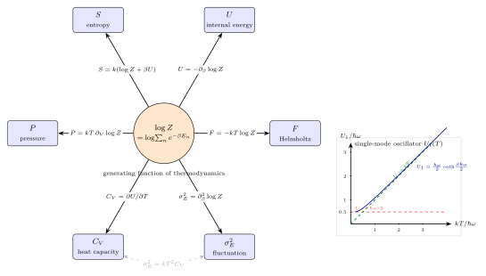

配分函数 $Z$ — 为什么 $\log Z$ 就是热力学的全部?
考虑桌上那杯水. 它有大约 $10^{25}$ 个水分子, 每一个都有自己的位置和动量, 整个系统的微观态数是一个让人绝望的天文数字. 可是从厨房温度计上看, 它只有一个数: 23 摄氏度. 几百亿亿亿个自由度, 被一个数压缩了. 这件事为什么可能? 更精确地问: 当我们说"给定温度 $T$, 体积 $V$, 粒子数 $N$", 我们其实是在对所有微观态作一个加权平均 —— 加权系数是什么? 为什么偏偏是 $e^{-\beta E_n}$? 而一旦有了这个权重, 为什么它的归一化因子 $Z = \sum_n e^{-\beta E_n}$ 的对数, 就足以包办所有热力学量?
上一节我们用 Carnot 循环从宏观一侧固定了温度的意义 —— 温度是效率的倒数. 这一节我们从微观一侧把温度嵌进去, 然后发现: 只需要一个函数 $Z(\beta, V)$, 整本热力学就像全息图一样从它的导数里全部浮现出来.
一、正则系综的设定: 谁是自由变量, 谁是求和对象
先把舞台搭起来. 正则系综对应的物理情景是: 一个系统被放在一个巨大的热库里, 库和系统之间可以交换能量但不交换粒子, 整体达到热平衡. 库把温度 $T$ 钉住, 系统的体积 $V$ 和粒子数 $N$ 也被实验者钉住. 这三个 $(T, V, N)$ 是自由变量 —— 我们在外部调它们. 被动变的是能量: 系统的能量会围绕某个平均值上下涨落.
这时候系统不再有"确定的能量". 它有的是一个概率分布: 处于第 $n$ 个微观态 (能量 $E_n$) 的概率 $p_n$. 我们要问的问题因此只剩一个: $p_n$ 等于多少? 只要这个问题解决了, 任何宏观量 $\langle A\rangle = \sum_n p_n A_n$ 就都能算出来.
可是 $p_n$ 凭什么是 $e^{-\beta E_n}/Z$? 教科书里往往把它写成一个公设, 好像天经地义. 但它其实可以从一个更简朴的原则逼出来 —— 最大熵原则. 下一节我们把这件事严格地做一遍.
二、deepdive: 从最大熵严格推出 $F = -kT\log Z$
这是一个被反复引用却很少被完整推出的公式. 我们慢慢来.
第一步: 把"对宏观态无知到最大程度"形式化. 我们在 $(T, V, N)$ 固定的前提下只知道一件事 —— 系统的平均能量 $\langle E\rangle = \sum_n p_n E_n$ 等于某个给定值 $\bar E$ (这个值由 $T$ 决定, 但在当下我们还不知道对应关系). 除此以外, 我们不应偏爱任何一个微观态. 形式化的说法是: 在所有满足 $\sum_n p_n = 1$ 且 $\sum_n p_n E_n = \bar E$ 的概率分布里, 选让 Shannon 熵 $S/k = -\sum_n p_n \log p_n$ 最大的那一个. 这就是 Jaynes 在 1957 年整理出的 MaxEnt 原则.
第二步: 拉格朗日乘子. 造泛函
$$\mathcal{L}[p] = -\sum_n p_n \log p_n - \alpha\left(\sum_n p_n - 1\right) - \beta\left(\sum_n p_n E_n - \bar E\right),$$
对每个 $p_n$ 取偏导并令其为零:
$$\frac{\partial \mathcal{L}}{\partial p_n} = -\log p_n - 1 - \alpha - \beta E_n = 0.$$
立即解出 $p_n = \exp(-1 - \alpha - \beta E_n)$. 把指数前两项记作 $1/Z$:
$$p_n = \frac{e^{-\beta E_n}}{Z}, \qquad Z \equiv \sum_n e^{-\beta E_n}. \tag{1}$$
归一条件 $\sum_n p_n = 1$ 自动固定了 $Z$. 乘子 $\beta$ 尚未物理解释 —— 我们很快就会看到它正是 $1/(kT)$.
第三步: 把熵 $S$ 用 $Z$ 写出来. 代回 Shannon 熵:
$$\frac{S}{k} = -\sum_n p_n \log p_n = -\sum_n p_n (-\beta E_n - \log Z) = \beta \langle E\rangle + \log Z.$$
因此 $S = k\beta U + k\log Z$, 其中 $U = \langle E\rangle$. 移项:
$$U - \frac{S}{k\beta} = -\frac{1}{\beta}\log Z.$$
第四步: 辨认 $\beta = 1/(kT)$. 热力学告诉我们, 在 $(T, V, N)$ 固定下的"自然"自由能是 Helmholtz 自由能 $F = U - TS$. 拿它和上式比较, 两边都是 $U$ 减去某个跟熵成正比的项 —— 只要把 $1/(k\beta)$ 等同于 $T$, 这两个等式就一模一样. 这不是"巧合": 从微正则系综出发可以独立证明 $\beta = (\partial S/\partial E)/k = 1/(kT)$ (热力学温度的统计定义). 我们在这里取用这个结果.
代入后:
$$\boxed{\,F(T, V, N) = -kT \log Z(T, V, N).\,} \tag{2}$$
这就是那句口号的严格推导. 它不是一条公设, 而是"MaxEnt + 热力学温度定义"的必然产物. 注意我们一路只用了三件事: (i) 概率归一化; (ii) 给定平均能量; (iii) 熵最大. 这个结构的普适性是它厉害的地方 —— 把约束换一换 (例如加一条"平均粒子数给定"), 立即得到巨正则系综; 把 Shannon 熵换成量子 von Neumann 熵, 立即得到密度矩阵版本. 同一个模板, 不同的细节.

三、$\log Z$ 的生成函数结构: 一阶是平均, 二阶是涨落
有了 $(2)$, 后面几乎是机械劳动. 把 $F = -kT\log Z$ 对自然变量求导, 所有热力学量依次落下来. 关键在于认识到: 每一个热力学量, 都是 $\log Z$ 对某个参量的某阶导数. 这就是"生成函数"的完整含义.
内能 $U$. $\log Z$ 对 $\beta$ 求导, 按链式法则立刻得到
$$U = \langle E\rangle = \sum_n p_n E_n = -\frac{\partial \log Z}{\partial \beta}.$$
验证一下: $\partial_\beta \log Z = (1/Z)\sum_n (-E_n) e^{-\beta E_n} = -\langle E\rangle$. 对号.
熵 $S$. 由第二步结果 $S = k\log Z + U/T$. 也可以直接由 $S = -\partial F/\partial T$ 出发, 得到完全一样的表达式. 两条路径必须一致 —— 这是 $F$ 作为 $(T, V, N)$ 的 Legendre 变换的一致性.
压强 $P$. 能级 $E_n$ 一般依赖于 $V$ (壁挤在那里, 粒子的定态也挤). 对 $\log Z$ 的 $V$ 偏导给
$$P = -\left(\frac{\partial F}{\partial V}\right)_{T,N} = kT\left(\frac{\partial \log Z}{\partial V}\right)_T.$$
对于无相互作用的理想气体, 这里立刻能蒸馏出 $PV = NkT$, 我们在下一节展开.
能量涨落 $\sigma_E^2$. 这是生成函数结构最优美的一面. $\log Z$ 的二阶 $\beta$ 导数就是方差本身:
$$\sigma_E^2 = \langle E^2\rangle - \langle E\rangle^2 = \frac{\partial^2 \log Z}{\partial \beta^2}.$$
因为 $U = -\partial_\beta \log Z$, 再对 $\beta$ 求一次导就给 $\partial_\beta^2 \log Z = -\partial U/\partial \beta = kT^2\,\partial U/\partial T = kT^2 C_V$. 因此
$$\sigma_E^2 = kT^2 C_V.$$
这是热力学和统计力学之间一个非常深的等式 —— 左边是微观世界能量的涨落, 右边是宏观的比热. 通常被称作"涨落-耗散定理"的最干净版本: 系统吸热能力 (耗散) 和它自发涨落幅度不是两个独立的事, 它们是同一个 $\log Z$ 的同一阶导数. 这件事在 Einstein 1910 年的涨落理论中已见雏形, 到 1950 年代 Kubo 进一步扩展成线性响应理论的骨干.
比热 $C_V$. 顺势落下来: $C_V = \partial U/\partial T = -(1/kT^2)\partial U/\partial \beta = (1/kT^2)\partial^2 \log Z/\partial \beta^2$. 它是 $\log Z$ 的二阶导数除以 $kT^2$. 不再神秘.
全部看下来, 图 1 那张星形图的结构就水落石出: 中心是 $\log Z$, 周围每一个"热力学量"都是它对 $\beta$ 或 $V$ 的某阶偏导 —— 一阶给平均, 二阶给涨落/响应. 教科书上那些看起来五花八门的 Maxwell 关系, 追到底不过是"偏导可以交换次序"的直接推论, 而偏导作用在谁身上? 都是 $\log Z$.
四、数字代入: 谐振子与室温 $kT$
抽象到这里, 我们必须落一个具体数字. 最干净的例子是单模谐振子.
能级 $E_n = \hbar\omega(n + \tfrac12)$, $n = 0, 1, 2, \ldots$. 配分函数是几何级数:
$$Z_1 = \sum_{n=0}^{\infty} e^{-\beta \hbar\omega (n + 1/2)} = \frac{e^{-\beta\hbar\omega/2}}{1 - e^{-\beta\hbar\omega}} = \frac{1}{2\sinh(\beta\hbar\omega/2)}.$$
按第三节的法则, $U_1 = -\partial \log Z_1/\partial\beta$. 求导:
$$U_1 = \frac{\hbar\omega}{2}\coth\!\left(\frac{\beta\hbar\omega}{2}\right) = \frac{\hbar\omega}{2} + \frac{\hbar\omega}{e^{\beta\hbar\omega} - 1}.$$
后一写法把两项分开了: 零点能 $\hbar\omega/2$ 加上按 Bose-Einstein 统计分布的声子平均占据数 $\langle n\rangle = 1/(e^{\beta\hbar\omega} - 1)$.
高温 (经典) 极限: $\beta\hbar\omega \ll 1$, 展开 $\coth x \approx 1/x + x/3$, 得 $U_1 \to kT + \mathcal{O}(\hbar^2\omega^2/kT)$. 这正是经典等分定理: 二次型的每个自由度贡献 $\tfrac12 kT$, 谐振子有动能和势能两个二次自由度, 合计 $kT$.
低温 (量子) 极限: $\beta\hbar\omega \gg 1$, $\coth x \to 1$, 得 $U_1 \to \hbar\omega/2$ —— 只剩零点能. 声子被"冻结"了.
判断落在哪一端, 只需要比较两个能标: $kT$ 与 $\hbar\omega$. 在室温 $T = 300$ K:
$$kT = (1.38\times 10^{-23}\ \text{J/K})\times 300\ \text{K} \approx 4.14\times 10^{-21}\ \text{J} \approx 25.9\ \text{meV}.$$
这个 "室温 $kT \approx 25$ meV" 是整个凝聚态和化学的基本坐标. 拿它跟几种典型的 $\hbar\omega$ 比:
- 金刚石的光学声子 $\hbar\omega \approx 165$ meV —— $\hbar\omega/kT \approx 6.4$, 这些模式在室温下几乎全冻结, 对比热的贡献小. 这直接解释了为什么室温下金刚石的比热远低于 Dulong-Petit 值.
- 铅的声子典型 $\hbar\omega \approx 8$ meV —— $\hbar\omega/kT \approx 0.3$, 充分激发, Dulong-Petit 适用.
- 水分子的对称伸缩振动 $\hbar\omega \approx 450$ meV —— $\hbar\omega/kT \approx 17$, 这条振动模式在室温下死死地冻结, 所以算水的比热时只考虑平动和转动, 不用加振动贡献.
一个单一的参数比 $\hbar\omega/kT$, 通过一张 $U_1$ 曲线, 就把"是否量子"的物理说清楚了. 这就是 $Z$ 的威力 —— 它不是摆设, 它是真的把一切都装在里面.
五、历史与大图景
现在回头看历史. Boltzmann 在 1870 年代用微正则系综 ($S = k\log W$) 开辟了统计力学, 但那套形式在涉及不同能量的系统时会变得笨拙. Gibbs 在 1902 年出版《Elementary Principles in Statistical Mechanics》, 把"系综"作为统计力学的一级概念, 并定义了正则系综和配分函数. 这本小书用的是哈密顿力学的语言, 没有 Planck 常数, 但方程 $(1)$ 和 $(2)$ 已经完全成形 —— Gibbs 把它写作 $\psi = -kT\log Z$ (他的自由能记号). 量子力学出现后, 只需要把"对相空间积分"换成"对能级求和", 整个机器继续转动.
一个关键的历史细节: Gibbs 的配分函数一开始只是个形式工具, 他自己对它的物理地位也持谨慎态度 —— 毕竟"系综"是想象中的无穷多个副本, 不是实验里的一盒真气体. 真正让 $F = -kT\log Z$ 变成一种"哲学"而不仅仅是技术的, 是 Jaynes 在 1957 年的两篇 Physical Review 论文. 他指出: 统计力学的基础不必是遍历性假说或平衡态假设, 而可以是信息论里的最大熵原则 —— 正是我们在第二节走过的那条路. 这把统计力学从"关于多粒子系统的物理"重新定位成"关于不完全信息的推理框架", 使它能扩展到远超平衡态的场合 (图像重建、语言模型、生态建模). 这种"视角升级"是 $F = -kT\log Z$ 最后一块拼图.
小结
$Z$ 把一个不可数的微观自由度空间收缩成一个数, 而它的对数 $\log Z$ 则变成了一个生成函数 —— 对 $\beta$ 的一阶导是内能, 二阶导是能量涨落和比热; 对 $V$ 的一阶导是压强; 再加上 $S = k(\log Z + \beta U)$, 所有标准热力学量齐聚一堂. 更重要的是, 这套结构不是神秘拼凑, 它是"MaxEnt 加热力学温度定义"逼出来的唯一选择, 因此它不特属于经典或量子, 也不特属于任何一种具体系统. 下一节我们把镜头拉远, 看不同约束 (粒子数守不守恒、能量守不守恒) 下系综如何变换 —— 你会看到, 它们只是同一个 MaxEnt 模板里换几个拉格朗日乘子而已.
▲